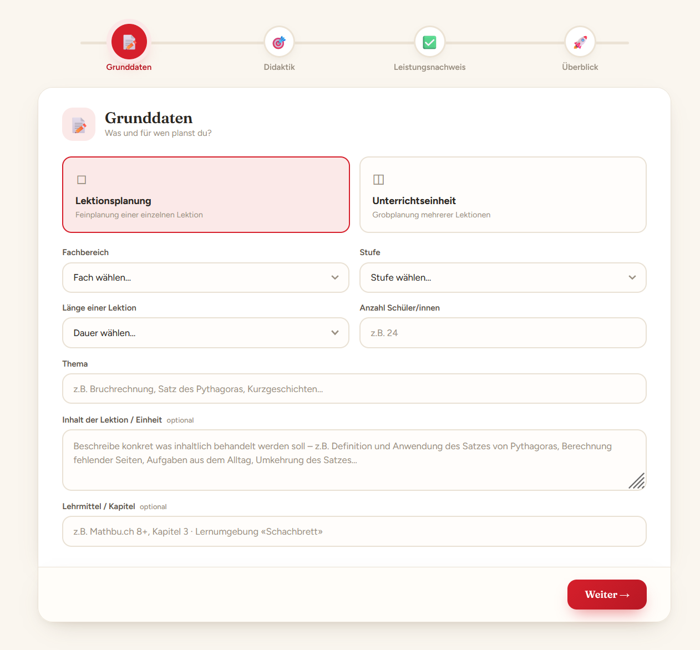
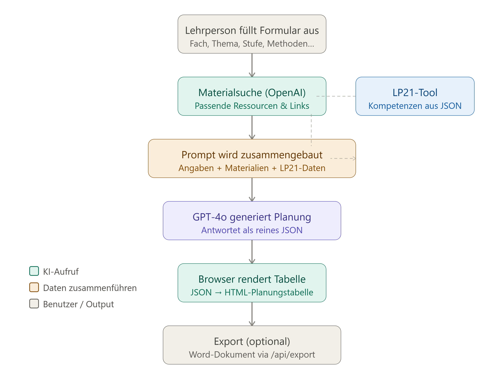
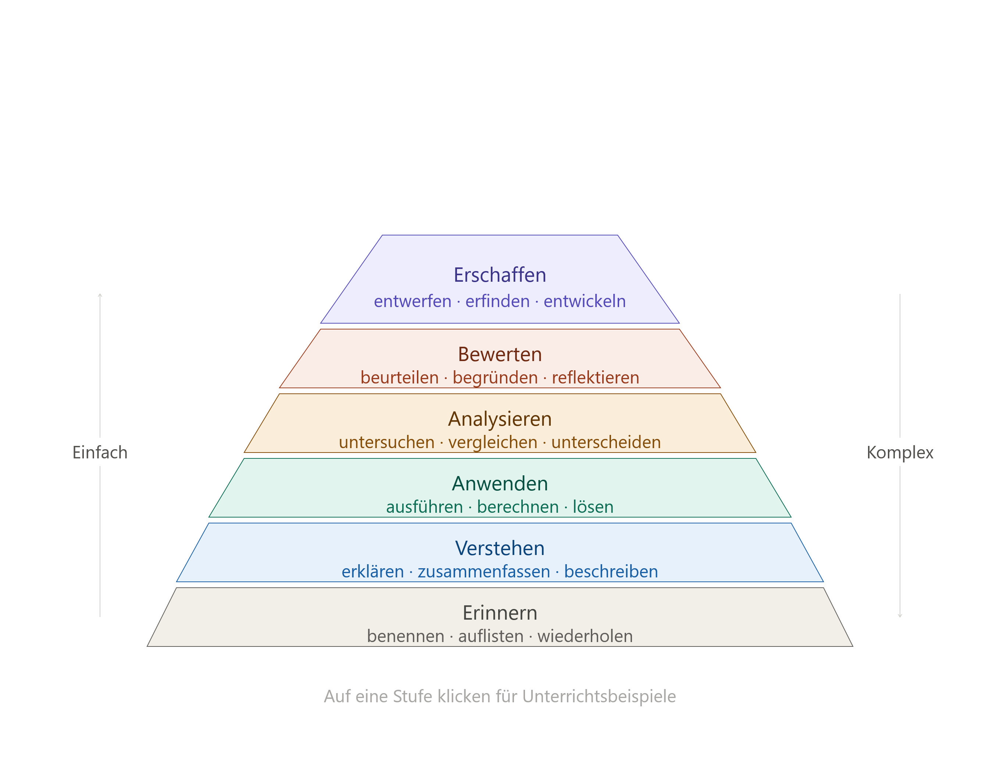
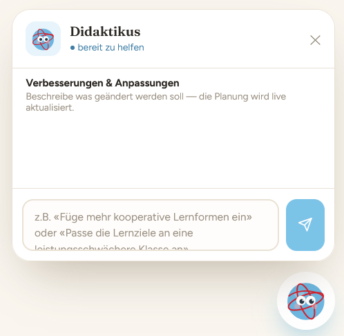
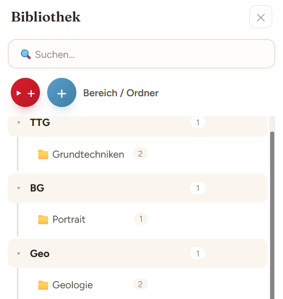
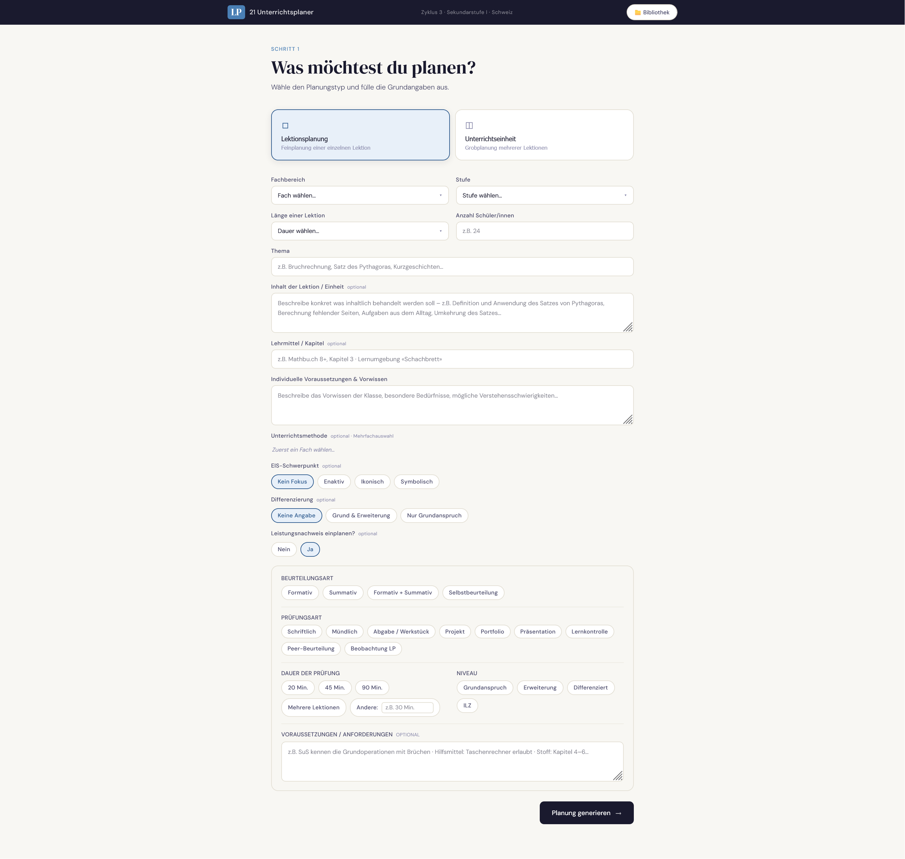

Didaktikus unterstützt Lehrpersonen bei der Unterrichtsplanung von Lektionen und Einheiten, indem es bedürfnisabgestimmte Planungen generiert, diese in ihrer Darstellung vereinheitlicht und an einem Ort sammelt. Anders als andere Chatbots ist Didaktikus auf die Didaktik des Lehrplans 21 spezialisiert.
Technische Umsetzung
Die technische Umsetzung erfolgte fast ausschliesslich über die Zusammenarbeit mit dem Chatbot Claude. Der Fokus des Projekts liegt auf dessen konzeptioneller Ausarbeitung.
Formularbereich

Der Formularbereich orientiert sich an den offiziellen Planungsdokumenten, welche an den pädagogischen Hochschulen verwendet werden. Die Kompetenzbereiche des Lehrplans 21 werden von der KI aus JSON-Files ausgelesen und passend zur Planung angegeben.
Generierungsmechanismus

Die Generierung funktioniert über einen grossen Prompt, der erstellt und an einen externen Chatbot gesendet wird. Dessen Antwort wird in die HTML-Vorlagen eingefügt und angezeigt.
Prüfungsvorlagen

Zum Generieren einer passenden Prüfung wird die zum Typ passende Vorlage verwendet und in den Prompt eingebaut. Die Vorlagen wurden nach der Taxonomie von Bloom aufgebaut.
Nachbearbeitung

Da KI selten eine Planung herausgibt, welche vollständig auf die Bedürfnisse der Lehrperson zugeschnitten ist, können einzelne Teile erneut über die Didaktikus-Chatfunktion angepasst oder manuell in einem heruntergeladenen Word-Dokument bearbeitet werden.
Bibliotheksfunktion

Die Bibliotheksfunktion bietet die Möglichkeit, Planungen und Prüfungen zu organisieren und bei Bedarf zu einem späteren Zeitpunkt wieder darauf zuzugreifen und sie zu bearbeiten.
Finale Gestaltung

Die finale Gestaltung wurde erst nach den zentralen Funktionen ausgearbeitet. Als Maskottchen wurde Didaktikus gewählt, um dem KI-Agenten ein Gesicht und eine persönliche Note zu geben. Sein verspielter, freundlicher Look schafft Nähe und passt gut ins pädagogische Umfeld.